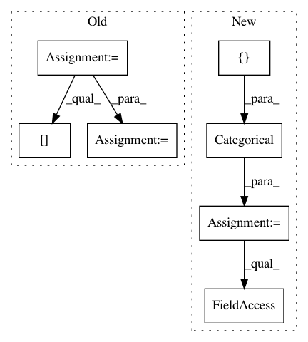

34e7e918bd4fc09f643e8bb448e875a9bcb7e841,experiment.py,,,#,4
Before Change
if model is FirstDifferenceOLS:
formula = "y ~ x0 + x1 + x2 + x3 + x4"
joined = data.x
joined["y"] = data.y
mod = model.from_formula(formula, joined)
res = mod.fit()
print(res)
After Change
import numpy as np
y = np.arange(12.0)[:,None]
import pandas as pd
entities = pd.Categorical(pd.Series(["a"]*6+["b"]*6))
dummies = pd.get_dummies(entities)
w = np.random.chisquare(5, (12,1)) / 5
w = w/w.mean()
root_w = np.sqrt(w)
wd = root_w * dummies.values
wy = root_w * y
b = np.linalg.pinv(wd) @ wy
In pattern: SUPERPATTERN
Frequency: 3
Non-data size: 7
Instances
Project Name: bashtage/linearmodels
Commit Name: 34e7e918bd4fc09f643e8bb448e875a9bcb7e841
Time: 2017-03-29
Author: kevin.k.sheppard@gmail.com
File Name: experiment.py
Class Name:
Method Name:
Project Name: has2k1/plotnine
Commit Name: 44682f54140e61f260878ad2d2703eecba91e1e9
Time: 2015-04-20
Author: has2k1@gmail.com
File Name: ggplot/facets/locate.py
Class Name:
Method Name: locate_wrap
Project Name: has2k1/plotnine
Commit Name: 44682f54140e61f260878ad2d2703eecba91e1e9
Time: 2015-04-20
Author: has2k1@gmail.com
File Name: ggplot/facets/locate.py
Class Name:
Method Name: locate_grid